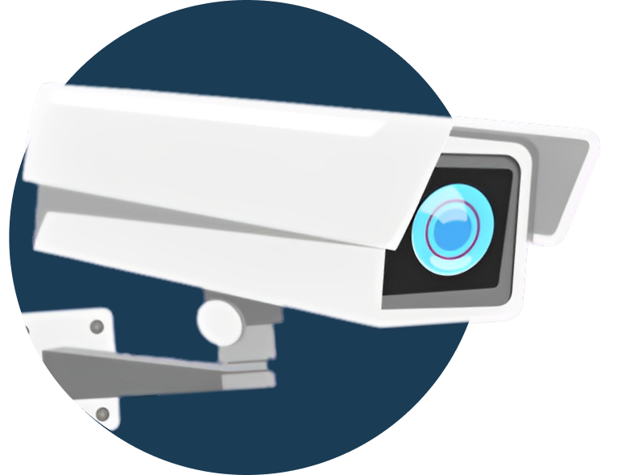
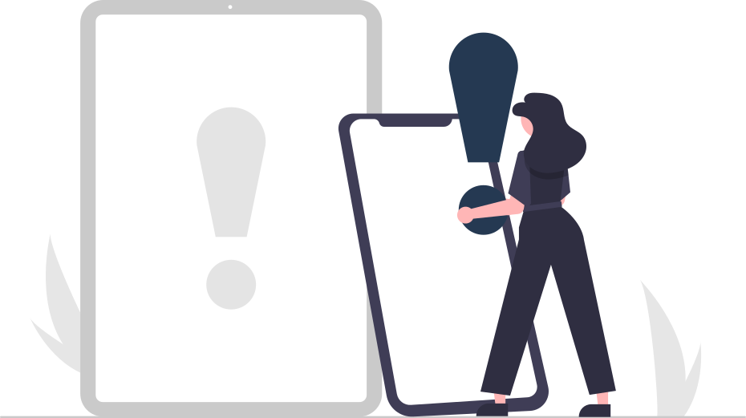

Keep a watchful eye on every corner. Our real-time monitoring system provides crystal-clear visibility for total exam control.

Intelligent algorithms instantly flag suspicious behaviors—looking away, phone usage, or unrecognized objects in the scene.
Ensuring authorized access only. Our secure login protects the integrity of your proctoring environment.
Access comprehensive reports after every session. Review evidence, confirm incidents, and maintain academic standards.

باستخدام الرؤية الحاسوبية والشبكات العصبية لتوفير رقابة عادلة وموثوقة.
تواجه أنظمة الامتحانات التقليدية تحديات جسيمة، فالمراقبة البشرية غالباً ما تفتقر للاتساق والدقة، كما أن البحث اليدوي في السجلات والفيديوهات يُعد عملية بطيئة ومرهقة للغاية، مما يؤدي في النهاية إلى تشتت الأدلة وصعوبة تتبع المخالفات بشكل منظم.

تحويل المراقبة من عملية بشرية محدودة إلى
منظومة ذكية، لحظية، عادلة، وموثوقة
تضمن النزاهة الأكاديمية في كل مرحلة.
مراقبة الطالب واكتشاف تفاعلاته مع الهواتف أو أي أجهزة ممنوعة فوراً.
تحديد وضعيات وحركات رأس الطالب وجسده لكشف السلوكيات المشبوهة.
حفظ لقطات كأدلة قاطعة عند رصد أي محاولة غش.
تنبيه المراقب البشري لحظياً بالوقائع لاتخاذ الإجراء العادل والسريع.


.png)


لأن النظام يتعامل مع صور وبيانات حساسة، صُممت طبقات الأمان لضمان الخصوصية ومنع أي استخدام غير مصرح به.
وظائف عملية تغطي الكشف، التوثيق، والتحليل مع واجهة سهلة الاستخدام.
YOLOv11 للكشف اللحظي داخل القاعة.
منع الانتحال عبر Face Recognition.
OpenCV و MediaPipe لرصد السلوكيات المشبوهة.
تتضمن بيانات الطالب، الزمن، وصور الدليل.
محضر رسمي جاهز للمراقب والإدارة.
حسب التاريخ، القسم، رقم القيد ونوع الغش.
أنماط الغش والأقسام الأكثر تكرارًا.
تشغيل سريع دون تدريب مسبق.

معالجة فورية < 200ms باستخدام YOLOv11s المستقر.
أرشفة الأدلة وتصدير History Cards فوراً.
التأكد من هوية الطالب عبر GhostFacenets.
سياسة التدمير الآمن للبيانات بعد 7 أيام.
استهلاك منخفض للذاكرة يدعم الأLabات المدرسية.
تغطية القاعات الكبيرة وإلغاء النقاط العمياء تماماً.
لوحات تحكم للإحصائيات الشاملة وأنماط سلوك الطلاب.
تقنيات Gaze Tracking للكشف عن النظر للمواد المخفية.
تنبيهات فورية مع اهتزاز للمراقبين أثناء حركتهم.
الربط مع Moodle و Canvas لمزامنة المخالفات آلياً.
تقارير حوادث مولدة بالـ AI مع ملخصات نصية موثقة.
متاح لجميع الطلاب والأساتذة للاستفادة والبحث العلمي.
يمكنكم الوصول إلى المشروع كاملاً عبر GitHub.